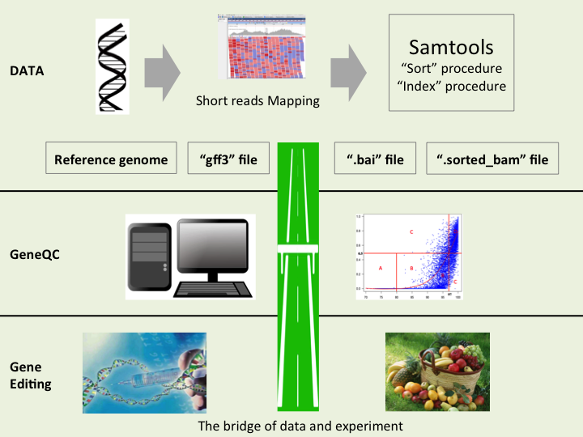

Why is GeneQC needed?
Mapping Uncertainty, in which a given RNA-seq read can be mapped to multiple genomic locations, is a prominent issue in reference-based RNA-seq analyses throughout most eukaryotic species. This issue can result in biased gene expression estimations which affects all downstream analyses, from assembly and differential gene expression to regulatory network elucidation.

Figure 1. To be added
How do we approach this problem?
The first step to addressing mapping uncertainty is to develop a method for determining how severe the problem is for a given dataset. In GeneQC, we extract usable features from two genetic levels, genomic and transcriptomic. From the genomic level, we look at the sequence similarity for two genomic locations, whereas for the transcriptomic level, we investigate the proportion of shared reads for two genes or transcripts after initial alignment.

Figure 2. To be added
Our Process!
These two levels of information are combined using advanced mathematical and statistical approaches to develop a distinct score, referred to as the D-score, to provide a clear measure of the level of mapping uncertainty for each annotated gene for a particular species. Additionally, mixture model distributions are used to determine categorizations for the mapping uncertainty, and thus recommendations for which genetic expression estimates are reliable following the read alignment step.

To be added